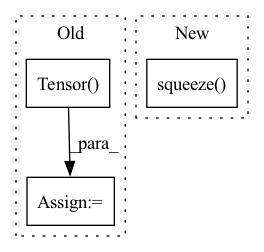

Pattern ID :8582
Before Change
mixture = sources.sum(axis=(0, 1), keepdims=True)
mixture = torch.Tensor(mixture).float()
target = torch.Tensor( target) .float()
print(mixture.size(), target.size())
After Change
sources = np.concatenate(sources, axis=0)
mixture = sources.sum(axis=0)
print(mixture.shape)
mixture = mixture.squeeze(axis=1)
print(mixture.size(), target.size())
return mixture, targetIn pattern: SUPERPATTERN
Frequency: 3
Non-data size: 3
Instances Fragment ID: 29737078
Project Name: tky823/dnn-based_source_separation
Commit Name: cef3dd20537b53ff818e7fd64fec81e31deeaf06
Time: 2021-08-13
Author: 40362510+tky823@users.noreply.github.com
File Name: egs/musdb18/d3net/src/adhoc_dataset.py
M Class Name: SpectrogramTrainDataset
N Class Name: SpectrogramTrainDataset
M Method Name: _getitem_augmentation(1)
N Method Name: _getitem_augmentation(1)
M Parent Class: SpectrogramDataset
N Parent Class: SpectrogramDataset
M File Name: egs/musdb18/d3net/src/adhoc_dataset.py
N File Name: egs/musdb18/d3net/src/adhoc_dataset.py
M Start Line: 507
M End Line: 508
N Start Line: 505
N End Line: 507
Before Change
[0.4474, 0.1820]],
[[0.9195, 0.5265],
[0.9118, 0.8291]]]])
expected_output_img2 = torch.Tensor(
[[[[0.8411, 0.2361],
[0.7857, 0.8766]],
[[0.7075, 0.0000],
[1.0000, 0.4138]],
[[0.9694, 0.4674],
[0.9577, 0.8476]]]])
expected_output_bag = torch.vstack([expected_output_img1,
expected_output_img2])
_test_data_augmentation(data_augmentation,After Change
_test_data_augmentation(data_augmentation, dummy_img, expected_output_img, stochastic=True, seed=1, atol=1e-3)
// Test tiling on the fly (i.e. when the input image does not have a batch dimension)
_test_data_augmentation(data_augmentation, dummy_img.squeeze(0), expected_output_img.squeeze( 0) ,
stochastic=True, seed=1, atol=1e-3)
Fragment ID: 29737073
Project Name: microsoft/hi-ml
Commit Name: 5ce9e00fd52f9a4f80c11aa35d3b7152c1ce9fca
Time: 2023-02-22
Author: 61745616+harshita-s@users.noreply.github.com
File Name: hi-ml/testhiml/testhiml/test_data_augmentations.py
M Class Name: AnonimousClass
N Class Name: AnonimousClass
M Method Name: test_hed_jitter(0)
N Method Name: test_hed_jitter(0)
M Parent Class:
N Parent Class:
M File Name: hi-ml/testhiml/testhiml/test_data_augmentations.py
N File Name: hi-ml/testhiml/testhiml/test_data_augmentations.py
M Start Line: 75
M End Line: 90
N Start Line: 74
N End Line: 87
Before Change
estimated_sources = norbert.wiener(estimated_amplitude, mixture, eps=eps)
estimated_sources = estimated_sources.transpose(3, 2, 1, 0)
estimated_sources = torch.Tensor( estimated_sources) .to(device, dtype)
return estimated_sourcesAfter Change
n_dims = mixture.dim()
if n_dims == 4:
mixture = mixture.squeeze(dim=0)
elif n_dims != 3:
raise ValueError("mixture.dim() is expected 3 or 4, but given {}.".format(mixture.dim()))
assert estimated_amplitude.dim() == 4, "estimated_amplitude.dim() is expected 4, but given {}.".format(estimated_amplitude.dim()) Fragment ID: 29737065
Project Name: tky823/dnn-based_source_separation
Commit Name: 25840d65326c0f609aa08d466f1a5a8d68a7ba1d
Time: 2021-08-14
Author: 40362510+tky823@users.noreply.github.com
File Name: egs/musdb18/d3net/src/adhoc_driver.py
M Class Name: AnonimousClass
N Class Name: AnonimousClass
M Method Name: apply_multichannel_wiener_filter(4)
N Method Name: apply_multichannel_wiener_filter(4)
M Parent Class:
N Parent Class:
M File Name: egs/musdb18/d3net/src/adhoc_driver.py
N File Name: egs/musdb18/d3net/src/adhoc_driver.py
M Start Line: 358
M End Line: 372
N Start Line: 358
N End Line: 377